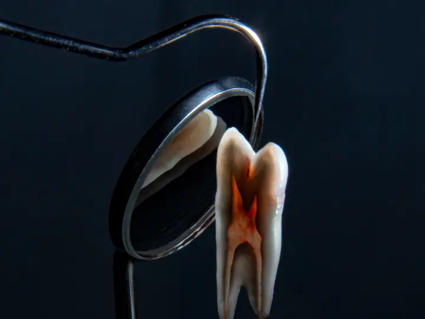
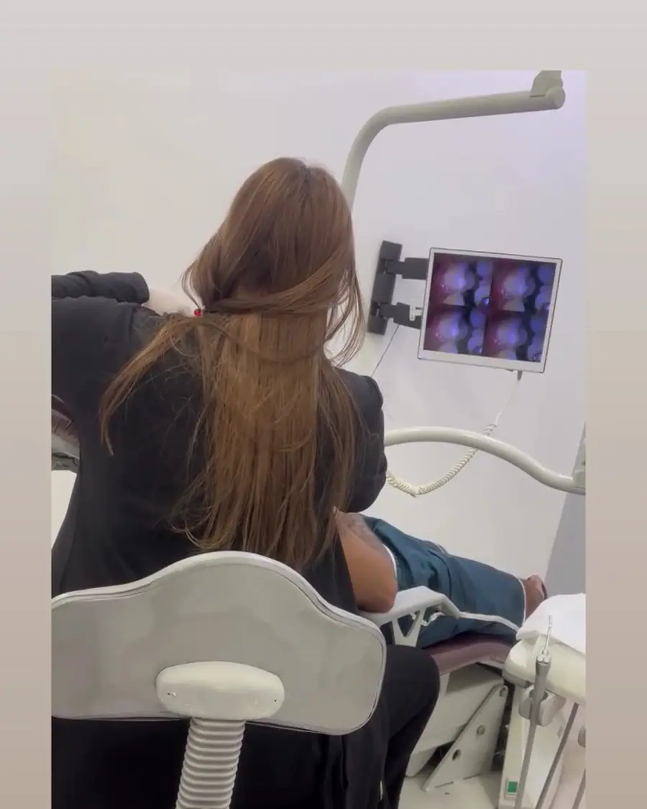
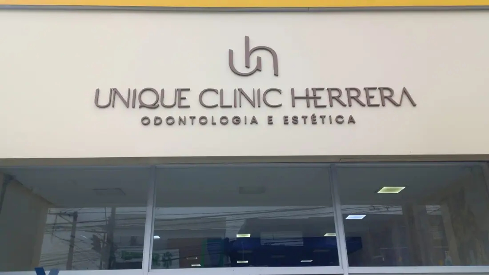

01
Avaliação e clínico geral
Consulta completa, limpeza, restaurações e prevenção. É por aqui que todo tratamento bem-feito começa.
Agendar avaliaçãoOdontologia e estética no Centro de Itapecerica da Serra
Implantes, próteses, ortodontia e estética dental com atendimento humanizado, condições facilitadas e horário até as 20h durante a semana.
Aberta até as 20h de segunda a sexta
Escolha o tratamento e fale direto com a equipe da Unique Clinic Herrera. A mensagem já vai pronta no WhatsApp.
Consulta completa, limpeza, restaurações e prevenção. É por aqui que todo tratamento bem-feito começa.
Agendar avaliação
Reposição de dentes perdidos com implantes, devolvendo firmeza para mastigar e segurança para sorrir.
Agendar avaliação
Próteses fixas e removíveis para recuperar a mastigação, a fala e a confiança no sorriso.
Agendar avaliação
Ortodontia para alinhar os dentes e corrigir a mordida, com manutenção e acompanhamento até o fim.
Agendar avaliação
Dentes mais claros com técnica indicada para o seu caso, depois de avaliar a saúde da gengiva e do esmalte.
Agendar avaliação
Facetas em resina ou porcelana para corrigir cor, forma e tamanho dos dentes com resultado natural.
Agendar avaliação
Restaurações da cor do dente para tratar cáries e desgastes sem que ninguém perceba.
Agendar avaliação
Endodontia para salvar o dente e acabar com a dor, com anestesia e acompanhamento em cada sessão.
Agendar avaliação
Mais de 540 pacientes avaliaram a Unique no Google. Eles falam de uma recepção que acompanha cada passo e de dentistas atenciosas do começo ao fim.
Sem complicação: você conversa, entende o seu caso e só então decide.
Conte o que está sentindo ou o que quer melhorar no sorriso. A equipe responde e encontra o melhor horário para você.
O dentista examina, conversa com você e explica as opções de tratamento, com o plano e as etapas por escrito.
Você decide com calma e é acompanhado em cada sessão, até o resultado final.
Segunda a sexta: 08h–20h · Sábado: 08h–17h
Depoimentos reais de pacientes publicados no Google Maps.
“Organizei um tratamento odontológico-estético complexo, com colocação de próteses fixas, para um familiar e posso atestar que o serviço e o atendimento são excelentes e muito humanizados. Ficamos muito satisfeitos desde o início.”
“Simplesmente amei o atendimento! As meninas foram super atenciosas e carismáticas. Além disso, as salas são extremamente bem equipadas, com ótimos equipamentos e tudo muito organizado.”
“Eu amo essa clínica. As meninas da recepção, Thais e Jaque, são maravilhosas. A Dra. Márcia, ortodontista, é um amor. Facilitam formas de pagamento e têm flexibilidade na agenda.”
“Fui super bem atendido desde o primeiro contato via WhatsApp, pela Jaqueline, e na clínica pela Thais e pela Dra. Kevillin, super atenciosas e claras com as informações.”
“Muito bom, atendimento impecável. Sempre muito bem recebida pela Jaqueline e pela Thaís, e a Dra. Márcia e a Dra. Kevilin sempre muito atenciosas.”
Não achou sua dúvida? Pergunte direto para a equipe no WhatsApp.
A Unique Clinic Herrera fica na Av. Quinze de Novembro, 244, Centro, em Itapecerica da Serra (SP), CEP 06850-090. Pelo botão "Traçar rota" nesta página você abre o caminho direto no Google Maps.
A clínica atende segunda a sexta, das 08h às 20h; sábado, das 08h às 17h. Aos domingos fica fechada. O agendamento é feito pelo WhatsApp.
É só chamar no WhatsApp (11) 99269-6765 pelo botão "Agendar avaliação". A equipe responde, tira suas dúvidas e marca o melhor horário para a sua avaliação.
Avaliação e clínico geral, Implantes dentários, Próteses dentárias, Aparelho ortodôntico, Clareamento dental, Facetas e lentes de contato, Restaurações e estética e tratamento de canal. O tratamento indicado para você é definido na avaliação.
Para a maioria das pessoas, a cada seis meses, para limpeza e revisão. Assim os problemas são encontrados cedo, quando o tratamento é mais simples.
O procedimento é feito com anestesia local, então você não sente dor durante a cirurgia. Nos dias seguintes pode haver um leve incômodo, controlado com as orientações e a medicação indicadas pelo dentista.
Depende de quantos dentes faltam e da saúde da boca e do osso. Existem próteses removíveis, fixas e as fixas sobre implantes, como o protocolo. A indicação é feita depois da avaliação.
Depende de cada caso, mas a maioria dos tratamentos leva entre um e três anos. Na avaliação o ortodontista mostra uma estimativa para o seu sorriso.

Agende sua avaliação na Unique Clinic Herrera em poucos minutos pelo WhatsApp.